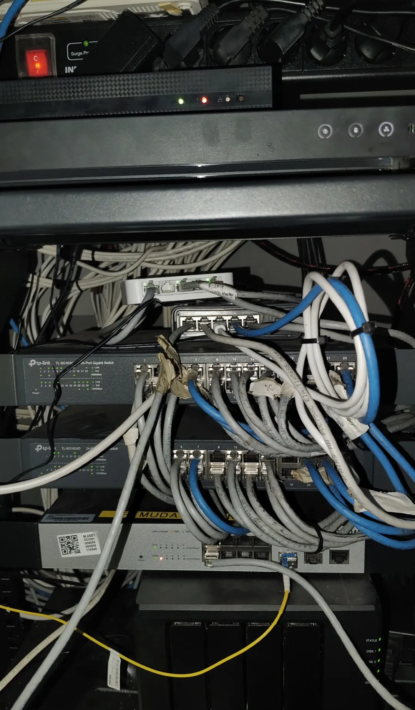
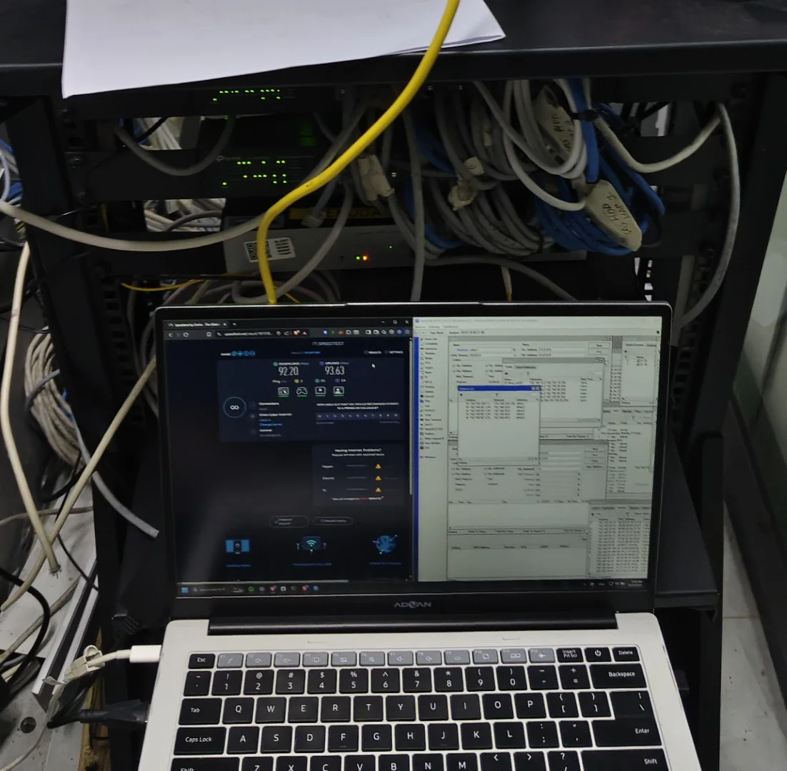
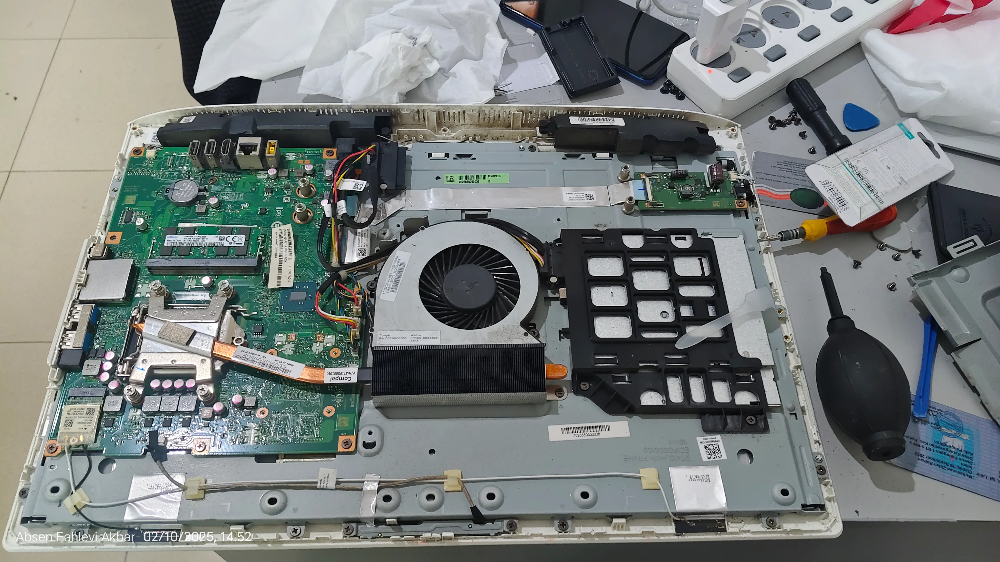

Server Infrastructure Maintenance
Managing and maintaining office infrastructure, including server environments, backup systems, and troubleshooting.
IT Support • Infrastructure • Technology Explorer
I explore technology through self-hosted infrastructure, networking, web projects, automation, troubleshooting hardware and software.
01
I enjoy understanding how technology works behind the scenes, not just using it. Starting from computer networking and IT support, I expanded my experience into Linux, Docker, self-hosted infrastructure, and web development through hands-on projects.
02
Built a strong foundation in computer networking, hardware troubleshooting, and system fundamentals.
Providing technical support, maintaining devices, managing servers, and solving real-world IT issues.
Building a personal infrastructure with Linux, Docker, and self-hosted services while continuously exploring new technologies.
03
A collection of real-world projects, technical challenges, and infrastructure experiences.

Managing and maintaining office infrastructure, including server environments, backup systems, and troubleshooting.

Configuring network devices, troubleshooting connectivity, and maintaining reliable network environments.

Supporting users, maintaining devices, and solving daily technical issues.
04
A visual collection of my experiments, projects, infrastructure setups, and technical activities.
05
Linux • Docker • NAS Management • Backup & Recovery • Self-hosting
Hardware Troubleshooting • Software Troubleshooting • Windows Administration • Microsoft 365 • Printer Maintenance • Remote Support
Mikrotik • Network Configuration • TCP/IP • VPN • Network Troubleshooting
HTML • CSS • Responsive Design • SEO • Google Analytics
Git • GitHub • Cloudflare • Portainer • Uptime Kuma
06
Continuously expanding my knowledge in software engineering, information systems, and modern technologies while applying them through real-world projects and hands-on experience.
Completed a vocational competency assessment focused on Mikrotik RouterOS, network configuration, and basic networking concepts as part of my vocational education.
Built a strong foundation in computer networking, hardware troubleshooting, operating systems, and IT infrastructure that became the starting point of my IT career.
07
08